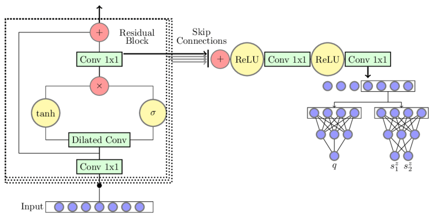

This is not orginal content!
This is my study notes / codes along with Andrej Karpathy’s “Neural Networks: Zero to Hero” series.
intro
We are going to take the 2-layer MLP in the part 3 of makemore and complexify it by:
- extending the block size: from 3 to 8 characters;
- making it deeper rather than 1 hidden layer.
then end of with a Convoluntional Neural Network architecture similar to WaveNet (2016) by Google DeepMind.

starter code walkthrough
import libraries
reading data
building vocab
Show the code
{1: 'a', 2: 'b', 3: 'c', 4: 'd', 5: 'e', 6: 'f', 7: 'g', 8: 'h', 9: 'i', 10: 'j', 11: 'k', 12: 'l', 13: 'm', 14: 'n', 15: 'o', 16: 'p', 17: 'q', 18: 'r', 19: 's', 20: 't', 21: 'u', 22: 'v', 23: 'w', 24: 'x', 25: 'y', 26: 'z', 0: '.'}
27initializing randomnization
create train/dev/test splits
Show the code
block_size = 3 # context length: how many characters do we take to predict the next one?
# build the dataset
def buid_dataset(words):
X, Y = [], []
for w in words:
context = [0] * block_size
for ch in w + '.':
ix = stoi[ch]
X.append(context)
Y.append(ix)
context = context[1:] + [ix]
X = torch.tensor(X)
Y = torch.tensor(Y)
print(X.shape, Y.shape)
return X, Y
n1 = int(0.8 * len(words))
n2 = int(0.9 * len(words))
Xtr, Ytr = buid_dataset(words[:n1]) # 80#
Xdev, Ydev = buid_dataset(words[n1:n2]) # 10%
Xte, Yte = buid_dataset(words[n2:]) # 10%torch.Size([182625, 3]) torch.Size([182625])
torch.Size([22655, 3]) torch.Size([22655])
torch.Size([22866, 3]) torch.Size([22866])Show the code
... ---> y
..y ---> u
.yu ---> h
yuh ---> e
uhe ---> n
hen ---> g
eng ---> .
... ---> d
..d ---> i
.di ---> o
dio ---> n
ion ---> d
ond ---> r
ndr ---> e
dre ---> .
... ---> x
..x ---> a
.xa ---> v
xav ---> i
avi ---> einitializing objects in networks
Near copy paste of the layers we have developed in Part 3, I added some docstring to the classes.
class Linear
Show the code
class Linear:
"""
Applies an affine linear transformation to the incoming data: y = xA^T + b.
This class implements a linear (fully connected) layer, which performs a linear
transformation on the input tensor. It is typically used in neural network architectures
to transform input features between layers.
Args:
fan_in (int): Number of input features (input dimension).
fan_out (int): Number of output features (output dimension).
bias (bool, optional): Whether to include a learnable bias term.
Defaults to True.
Attributes:
weight (torch.Tensor): Weight matrix of shape (fan_in, fan_out),
initialized using Kaiming initialization.
bias (torch.Tensor or None): Bias vector of shape (fan_out),
initialized to zeros if bias is True, otherwise None.
Methods:
__call__(x): Applies the linear transformation to the input tensor x.
parameters(): Returns a list of trainable parameters (weight and bias).
Example:
>>> layer = Linear(10, 5) # Creates a linear layer with 10 input features and 5 output features
>>> x = torch.randn(3, 10) # Input tensor with batch size 3 and 10 features
>>> output = layer(x) # Applies linear transformation
>>> output.shape
torch.Size([3, 5])
"""
def __init__(self, fan_in, fan_out, bias=True):
self.weight = torch.randn((fan_in, fan_out)) / fan_in**0.5 # note: kaiming init
self.bias = torch.zeros(fan_out) if bias else None
def __call__(self, x):
self.out = x @ self.weight
if self.bias is not None:
self.out += self.bias
return self.out
def parameters(self):
return [self.weight] + ([] if self.bias is None else [self.bias])class BatchNorm1d
Show the code
class BatchNorm1d:
"""
Applies Batch Normalization to the input tensor, a technique to improve
training stability and performance in deep neural networks.
Batch Normalization normalizes the input across the batch dimension,
reducing internal covariate shift and allowing higher learning rates.
This implementation supports both training and inference modes.
Args:
dim (int): Number of features or channels to be normalized.
eps (float, optional): A small constant added to the denominator for
numerical stability to prevent division by zero.
Defaults to 1e-5.
momentum (float, optional): Momentum for updating running mean and
variance during training. Controls the degree of exponential
moving average. Defaults to 0.1.
Attributes:
eps (float): Epsilon value for numerical stability.
momentum (float): Momentum for running statistics update.
training (bool): Indicates whether the layer is in training or inference mode.
gamma (torch.Tensor): Learnable scale parameter of shape (dim,).
beta (torch.Tensor): Learnable shift parameter of shape (dim,).
running_mean (torch.Tensor): Exponential moving average of batch means.
running_var (torch.Tensor): Exponential moving average of batch variances.
Methods:
__call__(x): Applies batch normalization to the input tensor.
parameters(): Returns learnable parameters (gamma and beta).
Key Normalization Steps:
1. Compute batch mean and variance (in training mode)
2. Normalize input by subtracting mean and dividing by standard deviation
3. Apply learnable scale (gamma) and shift (beta) parameters
4. Update running statistics during training
Example:
>>> batch_norm = BatchNorm1d(64) # For 64-channel input
>>> x = torch.randn(32, 64) # Batch of 32 samples with 64 features
>>> normalized_x = batch_norm(x) # Apply batch normalization
>>> normalized_x.shape
torch.Size([32, 64])
Note:
- Supports both 2D (batch, features) and 3D (batch, channels, sequence) input tensors
- During inference, uses running statistics instead of batch statistics
"""
def __init__(self, dim, eps=1e-5, momentum=0.1):
self.eps = eps
self.momentum = momentum
self.training = True
# parameters (trained with backprop)
self.gamma = torch.ones(dim)
self.beta = torch.zeros(dim)
# buffers (trained with a running 'momentum update')
self.running_mean = torch.zeros(dim)
self.running_var = torch.ones(dim)
def __call__(self, x):
# calculate the forward pass
if self.training:
if x.ndim == 2:
dim = 0
elif x.ndim == 3:
dim = (0,1)
xmean = x.mean(dim, keepdim=True) # batch mean
xvar = x.var(dim, keepdim=True) # batch variance
else:
xmean = self.running_mean
xvar = self.running_var
xhat = (x - xmean) / torch.sqrt(xvar + self.eps) # normalize to unit variance
self.out = self.gamma * xhat + self.beta
# update the buffers
if self.training:
with torch.no_grad():
self.running_mean = (1 - self.momentum) * self.running_mean + self.momentum * xmean
self.running_var = (1 - self.momentum) * self.running_var + self.momentum * xvar
return self.out
def parameters(self):
return [self.gamma, self.beta]class Tanh
Show the code
class Tanh:
"""
Hyperbolic Tangent (Tanh) Activation Function
Applies the hyperbolic tangent activation function element-wise to the input tensor.
Tanh maps input values to the range [-1, 1], providing a symmetric and non-linear
transformation that helps neural networks learn complex patterns.
Mathematical Definition:
tanh(x) = (e^x - e^-x) / (e^x + e^-x)
Key Characteristics:
- Output Range: [-1, 1]
- Symmetric around the origin
- Gradient is always less than 1, which helps mitigate the vanishing gradient problem
- Commonly used in recurrent neural networks and hidden layers
Methods:
__call__(x): Applies the Tanh activation to the input tensor.
parameters(): Returns an empty list, as Tanh has no learnable parameters.
Attributes:
out (torch.Tensor): Stores the output of the most recent forward pass.
Example:
>>> activation = Tanh()
>>> x = torch.tensor([-2.0, 0.0, 2.0])
>>> y = activation(x)
>>> y
tensor([-0.9640, 0.0000, 0.9640])
Note:
This implementation is stateless and does not modify the input tensor.
The activation is applied element-wise, preserving the input tensor's shape.
"""
def __call__(self, x):
self.out = torch.tanh(x)
return self.out
def parameters(self):
return []random number generator
network architecture
Show the code
# original network
n_embd = 10 # the dimensionality of the character embedding vectors
n_hidden = 300 # the number of neurons in the hidden layer of the MLP
# model = Sequential([
# Embedding(vocab_size, n_embd),
# FlattenConsecutive(8), Linear(n_embd * 8, n_hidden, bias=False), BatchNorm1d(n_hidden), Tanh(),
# Linear(n_hidden, vocab_size),
# ])
# parameter init
with torch.no_grad():
model.layers[-1].weight *= 0.1 # last layer make less confident
parameters = model.parameters()
print(sum(p.nelement() for p in parameters)) # number of parameters in total
for p in parameters:
p.requires_grad = Trueoptimization
Show the code
# same optimization as last time
max_steps = 200000
batch_size = 32
lossi = []
for i in range(max_steps):
# minibatch construct
ix = torch.randint(0, Xtr.shape[0], (batch_size,))
Xb, Yb = Xtr[ix], Ytr[ix] # batch X,Y
# forward pass
logits = model(Xb)
loss = F.cross_entropy(logits, Yb) # loss function
# backward pass
for p in parameters:
p.grad = None
loss.backward()
# update: simple SGD
lr = 0.1 if i < 150000 else 0.01 # step learning rate decay
for p in parameters:
p.data += -lr * p.grad
# track stats
if i % 10000 == 0: # print every once in a while
print(f'{i:7d}/{max_steps:7d}: {loss.item():.4f}')
lossi.append(loss.log10().item())
breaklet’s fix the learning rate plot
pytorchifying our code: layers, containers, torch.nn, fun bugs
implementing WaveNet
overview: WaveNet
dataset bump the context size to 8
re-running baseline code on block_size 8
implementing WaveNet
training the WaveNet: first pass
fixing batchnorm1d bug
re-training WaveNet with bug fix
scaling up our WaveNet
conclusions
performance log
experimental harness
WaveNet but with “dilated causal convolutions”
torch.nn
the development process of building deep neural nets
going forward
improve on my loss! how far can we improve a WaveNet on this data?
resources
- WaveNet 2016 from DeepMind: https://arxiv.org/abs/1609.03499;
- Bengio et al. 2003 MLP LM: https://www.jmlr.org/papers/volume3/bengio03a/bengio03a.pdf;
- Notebook: https://github.com/karpathy/nn-zero-to-hero/blob/master/lectures/makemore/makemore_part5_cnn1.ipynb